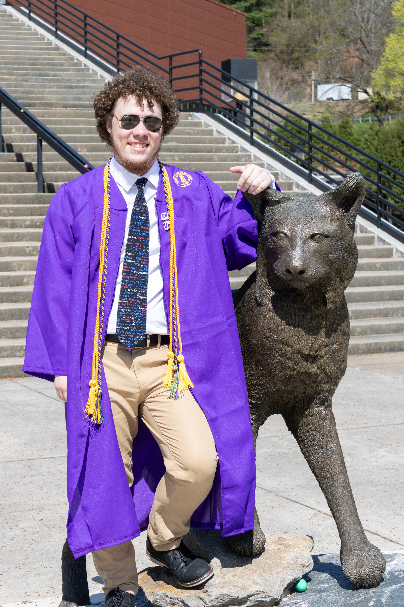

Home | Teaching | CV | Personal

Broadly, I am interested in mathematical phyiscs. Currently and more specificallly, I am interested in Quantum Statistical Mechanics with a focus in entropy. This particular work will be the focus of my master's thesis.